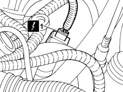
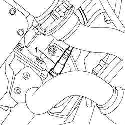

1080B97 RIGHT REAR LAMBDA SENSOR ON CATALYTIC CONVERTER R R
- Path
- Procedures > 10 ENGINE > 1080 EXHAUST EMISSION CONTROL SYSTEM > 1080B EXHAUST EMISSION CONTROL SYSTEM > 1080B97 RIGHT REAR LAMBDA SENSOR ON CATALYTIC CONVERTER R R
- Kind
- repair procedure (removal / refitting; the operation number is the code)
- Applies to
- engines: 3.0 24V V6; all production periods
- Interactive page
- https://sloeber94.github.io/elrnDB-fUlss/en/#/179007100
Applies to: engines: 3.0 24V V6; all production periods
 Removing
Removing
 Refitting
Refitting- Position the vehicle on the lift.
- Disconnect the negative battery terminal.
Description | Connector | |
|---|---|---|
. | Battery | A001B |
Op. 5010B18 CLIMATE CONTROL UNIT AIR INTAKE - R.R.
Op. 1016A42 LEFT HAND CYLINDER HEAD IGNITION COIL COVER - R+R
Op. 1048A47 SLEEVE FROM RIGID PIPE TO THROTTLE BODY - R R
1. Working on the right head, flywheel side, disconnect the electrical connection for the rear Lambda sensor on the catalyzer and release the wiring from the mountings.
Description | Connector | |
|---|---|---|
1 | Lambda sensor on catalyzer - 2 | K018 |

Applies to: engines: 3.0 24V V6; all production periods
Op. 7055B54 UNDER-ENGINE GUARD - R R
1. Undo the lower Lambda sensor on the right catalyzer

Applies to: engines: 3.0 24V V6; all production periods
Refitting
Removing- Tighten the rear Lambda sensor to the catalyzer to the recommended torque.
 | Value - daNm | Fastening | Component | Ø |
|---|---|---|---|---|
. | 5 | - | LEFT REAR LAMBDA SENSOR - R.R. | - |
- Connect the electrical connection for the rear Lambda sensor to the catalyzer and secure the wiring.
Description | Connector | |
|---|---|---|
. | Lambda sensor on catalyzer - 2 | K018 |
Op. 7055B54 UNDER-ENGINE GUARD - R R
Op. 1048A47 SLEEVE FROM RIGID PIPE TO THROTTLE BODY - R R
Op. 1016A42 LEFT HAND CYLINDER HEAD IGNITION COIL COVER - R+R
Op. 5010B18 CLIMATE CONTROL UNIT AIR INTAKE - R.R.
- Connect the negative battery terminal.
Description | Connector | |
|---|---|---|
. | Battery | A001B |
- Remove the vehicle from the lift.